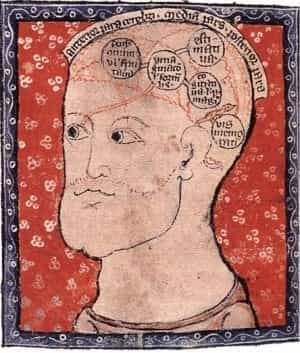
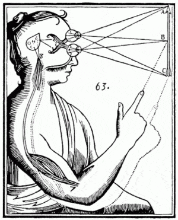
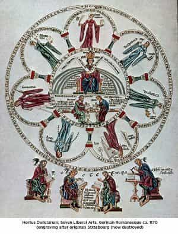
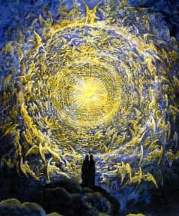

< < < Back
The Criterion Of Certitude – Return Of Kings
Greetings to the men of ROK! I’m sorry to have been on such a long sabbatical—and, unfortunately, I doubt I’ll be writing much longer. While I am sorry that my contributions have to be sparser for the forseeable future, this is due to some very good news for myself. Head over to the hermitage’s website to read about it.
This week, I want to wrap up our discussion on Epistemology/Criteriology, and Certitude. I will have to conclude it in a somewhat more peremptory fashion than I would like, since my good news requires a lot of preparation for an imminent deadline. But, I think this conclusion will be good enough to get the main gist across. I will provide a bibliography and links to other resources in an upcoming post, so that interested men can pursue matters further.
A Brief Recap
Criteriology is the study of man’s certitude, i.e., what and how he can know certainly. This is called “Criteriology” from the Greek κριτήριον (kriterion), meaning “standard of judgment,” and λόγος (logos), meaning “reckoning.” This is because certainty is present when the mind has made a judgment, in which there is a true correspondence between his thought and the thing being evaluated. Thus, the Scholastic maxim: Veritas est adaequatio intellectus et rei (“truth is the adequation of a thing and a thought”). Or, put otherwise, truth is when the objective and subjective elements of man’s judgment correspond.

Certainty is not an emotive feeling, but an awareness of knowing the truth; feeling strongly about something has nothing to do with certainty. It is produced when, upon sufficient reflection on the evident facts, the mind realizes that a certain thing is true, producing a compelling intellectual adherence. But this leads man to the question: “what is evident?” Cardinal Mercier, whose Manual of Scholastic Philosophy we were following, mentions that, since the time of Descartes, the question is usually posed: “Is human reason able to know things as they really are? Or, in other words: can we attain to a consciousness that our ideas are conformable to things as they are in themselves? How can the mind arrive at an assurance of this conformity?”
He points out that this formulation is incomplete and incorrect; trying to know what a thing may be in itself, considered apart from our perceptions of it, “is, as far as we are concerned, as if it did not exist, a pure non-entity.” This is because it is an absurdity to talk about what we can know about a thing in abstraction from our knowledge about that thing. Rather, as the Scholastic dictum says: cognitio est in cognoscente ad modum cognoscentis (“the thought is in the thinker according to the thinker’s own manner”) – i.e., every perceiving agent must of necessity perceive things in accord with its own nature. My human mode of perception, based upon the eye, its rods and cones, the retina, the nervous system, etc., perceives a red ball in a certain way. Surely an angel, for example, perceives the ball in some other way; but our perceptions correspond to the real thing, whatever it be in itself. Or, put another way: I can use my eyes to see that a ball is round; a blind man must perceive it in a different way, by touch, but perceives the same quality under a different manner of sensation.

Aided by deifying grace, Saint Benedict perceived all existence in a single ray of divine light; the saints understandably explain that such visions cannot be adequately explained to others by any analogy of human perception.
We can discuss the truthfulness of the mind’s perception of exterior things (“the objectivity of our conceptions”), or of the mind’s perception of abstract concepts (“the objectivity of the ideal order”). In examining the mind’s initial state of knowledge, Cardinal Mercier was careful to point out two equal, opposite errors: 1) the theory of universal doubt (which is an unwarranted and even irrational prejudice), and 2) exaggerated dogmatism (he affirmed the logical necessity of this view’s assumptions if the mind knows anything true, but rejected the attempt to take them for granted). The Cardinal was only willing to admit two things, a priori: 1) we subjectively experience spontaneous assent to various perceptions; 2) we are able to reflect on these.
Resolution Of The Problem
Cardinal Mercier points out that the resolution to the problem is actually quite simple. If the mind’s perceptions do not correspond to actual objects, whether of the ideal or actual order, the mind would be arbitrarily certain or doubtful in regards to the same object; instead, we see that the mind moves from doubt to certainty in regards to the same object, as it reflects upon what is evident about it. When the evidence is understood sufficiently by the intellect, it attains a certainty which remains for as long as the evidence is fresh to the mind, and understood thereby. This purely internal knowledge is also confirmed by conferral with other persons, whose intellects behave in the same way with regard to the same object of thought. Take this statement: “the degrees of the four angles produced when one line intersects another, always add up to 360 degrees.” Perhaps at first I don’t understand this. But upon reflection – measuring, reflection upon axiomatic truths of geometry and mathematics, etc. – it becomes clear to me. My mind will not fluctuate once this is understood and the evidence is before me. If my thoughts sprung from myself without any connection to this object’s real nature, one cannot see how this would be the case.

At first, I was unsatisfied with the Cardinal’s answer; I asked myself: “but what if it is the nature of the mind to produce these convictions, despite the fact that they do not really correspond to any real ‘truths?’” A great deal of reflection, and an helpful essay by the Church’s last truly fine theologian, Fr. Reginald Garrigou-Lagrange, helped me to reduce the matter to an even plainer level.
Many, taking Descartes’ statement slightly amiss, think that that first thing the intellect perceives is its own cognition (“I think, therefore I am”). Now, it may be true that the first thing the mind spontaneously reflects upon, is its own cognition; but in fact the mind must perceive being itself before it perceives cognition, for cognition involves the existence of the subject and object of the cognition. Thus, “I am, therefore I think.” We may not reflect upon this fact, however, until we have reflected upon our cognition, and this is why Descartes deduced his existence from his thought.
When the mind is making a certain judgment, it is doing nothing other, than perceiving being and judging that the subject and object of his judgment involve the same being. For example, Euclid knows what a line is; he perceives the nature of the angles formed when two lines meet perfectly perpendicularly; he perceives that there are four such angles in a perfect square. All he is doing in each case, is affirming that he perceives the same quality of being from one thing to the next. This is but the first, indemonstrable certainty cited by Aristotle in Metaphysics IV:iii – “A thing is not affirmed and denied at the same time,” the principle of non-contradiction. Everything else is based upon it.

Philosophy penetrates to the first principles of things, by which all other principles can be accurately derived.
We find that the evidence of this fact impresses itself upon our minds. We perceive that other men see it, and see other principle truths, as we do. Only with disgust, can we force ourselves to imagine that if x is equal to y, y may yet not equal x. Nothing interior or exterior to ourselves contradicts it or gives cause to question it; quite the opposite! To doubt our first and most basic certainty, then, is to will to doubt, not only without cause, but in spite of all causes to the contrary. The crisis of Modernity is based in this perversion of the will when it comes to pursuing certainty in important matters.
Essentially, this is at the bottom of it: in finding ourselves able still to will to doubt, in literal spite of ourselves and of everything, we have simply discovered that we are contingent beings suffering from a defect of will, who require the approbation and confirmation of the Necessary Being before we can escape the possibility of the brute, stubborn, irrational will to doubt. Moreover: if we insist that we cannot really affirm our perception of being, of the principle of non-contradiction, etc., with certainty, we find ourselves in a logical paradox: we would be affirming certainly that we cannot be certain. And we would be doing this based upon a (rash and erroneous) judgment that relies upon the same criterion of evidence which we deny and which, if we affirm it, compels us to affirm the possibility of certitude. Thus, we cannot even argue against certainty without affirming certainty and implicitly approving of all the evidence for it.
So: if we are willing to step away from the suicide of doubting simply because we find that we can, contrary to the necessary affirmations which the principles of this irrational and unwarranted doubt would require us to make in favor rather of certainty, we find that we can say with certainty that we perceive being; we perceive that existence exists; we find that what exists is not simultaneously affirmed and denied.
The Consequences
One may not think that this is a particularly outstanding thing. But, one would be surprised at how quickly the human mind, infallible in itself, begins perceiving the inevitable connections that arise from this perception of being (and non-being). For example, we perceive that insofar as we perceive being, we perceive it in act. We perceive that an act is directed towards an end; and that whatever begins to act, has a cause. We perceive that an agent acts with the goal of some good – and indeed, that an effect cannot be greater than its cause, so that the Good is necessarily itself the first cause and the final aim of all things.
In other words, with metaphysical certainty we perceive the existence of being, of the good, of act, of cause and of effect, of the natural and moral law, and even of God Himself, though of course the specifically revealed dogmas of the Faith are not able to be deduced from natural reason in this way. Yet, St. Thomas Aquinas points out that the immortality of the soul is at the far end of the spectrum of truths which can be demonstrated with certainty from natural reason.

I will soon tie this in to some of the political, social and moral points I had been making in my more recent articles. But in short: when a man thinks clearly, he will find that many truths, which are regarded by most Modern Westerners as unscientific, religious matters (and hence, mere opinions), are in fact able to be known with greater certainty, and with far greater ease, than most of their pet doctrines (on “rights,” “social justice,” even “Global Warming,” et al.). Indeed, in the aforementioned article of Fr. Garrigou Lagrange, he is keen to show that what we call “common sense” knows all these first principles of reason without much reflection; the entire purpose of modern schooling and media, is to destroy our innate common sense and to inhibit our powers of reflection, perverting the will towards the preference for doubt and for negation both of being and of the good.
While the Globalist Psychopaths affirm their own delusions with dogmatic fury, they will slander a proper, religious or moral truth as though it were simply a matter of your (bigoted) opinion. You can know certainly that 1) they are wrong; 2) even if they were right – which is impossible – they would have invalidated all their own opinions, equally; so, screw ’em.
The day is fast approaching, I believe, when Western men will have to stand up for themselves with more force and conviction than our age prepares us to have. But the coming battle will require us to rise to that challenge, and I would like to see you fight with the boldness and conviction of a clean conscience and a keen mind, with only humility and prudent pity to slow your sword-hand. Before that day comes, let us leave ignorance and unwarranted doubt aside.
Until next week!
Read More: 4 Reasons To Host A Feast